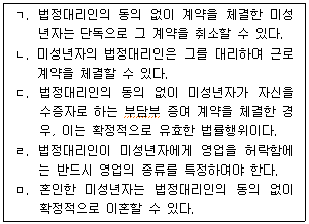
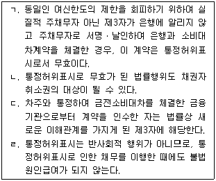
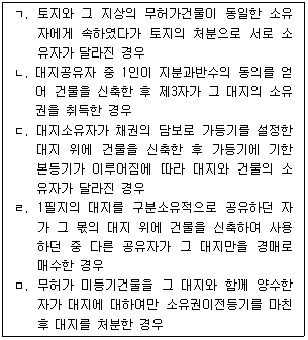
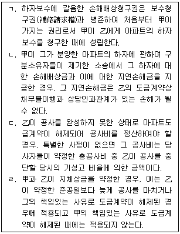

변리사-1차(2교시) (2014-02-22 기출문제)
1. 신의성실의 원칙에 관한 설명으로 옳지 않은 것은? (다툼이 있는 경우에는 판례에 의함)
- 소멸시효 완성 전에 채무자가 시효중단을 현저히 곤란하게 하여 채권자가 아무런 조치를 할 수 없었던 경우, 채무자가 시효완성을 주장하는 것은 권리남용으로 허용되지 않는다.
- 「국토의 계획 및 이용에 관한 법률」이 정하는 거래허가를 받지 않고 토지매매계약을 체결한 당사자가 스스로 그 계약의 무효를 주장하는 것은, 특별한 사정이 없으면, 신의성실의 원칙에 위반하는 권리행사로 허용되지 않는다.
- 권리행사로 권리행사자가 얻을 이익보다 상대방이 잃을 손해가 현저히 크다는 사정만으로는 이를 권리남용이라 할 수 없다.
- 소멸시효 완성 후 채무자가 이를 원용하지 않을 것 같은 태도를 보여 이를 신뢰한 권리자가 그로부터 시효정지에 준하는 단기간 내에 그의 권리를 행사한 경우 채무자는 시효완성을 주장하지 못한다.
- 상표권의 행사가 권리행사의 외형을 갖추었다 하더라도 상표제도의 목적을 일탈하여 공정한 경쟁질서와 상거래 질서를 어지럽히고 수요자 사이에 혼동을 초래하여 법적으로 보호받을 만한 가치가 없다고 인정되는 경우, 이는 등록상표에 관한 권리의 남용으로서 허용되지 않는다.
(정답률: 알수없음)

2. 미성년자의 법률행위에 관한 설명으로 옳은 것을 모두 고른 것은? (다툼이 있는 경우에는 판례에 의함)

- ㄹ
- ㄱ, ㅁ
- ㄴ, ㄷ
- ㄱ, ㄹ, ㅁ
- ㄴ, ㄷ, ㄹ
(정답률: 알수없음)
3. 물건에 관한 설명으로 옳지 않은 것은? (다툼이 있는 경우에는 판례에 의함)
- 임시로 심어놓은 수목은 동산이다.
- 토지에서 분리된 수목은 동산이다.
- 농작물이 토지와 별개의 독립한 물건이 되려면 명인방법을 갖추어야 한다.
- 특별한 사정이 없으면, 권원 없이 타인 소유의 토지에 심어놓은 수목은 그 타인에게 속한다.
- 명인방법을 갖춘 미분리의 과실은 토지나 수목과는 별개의 독립한 물건이다.
(정답률: 알수없음)
4. 통정허위표시에 관한 설명으로 옳은 것을 모두 고른 것은? (다툼이 있는 경우에는 판례에 의함)

- ㄱ, ㄴ
- ㄱ, ㄷ
- ㄴ, ㄷ
- ㄴ, ㄹ
- ㄷ, ㄹ
(정답률: 알수없음)
5. 소멸시효에 관한 설명으로 옳지 않은 것은? (다툼이 있는 경우에는 판례에 의함)
- 가분채무의 일부에 대한 시효이익의 포기는 허용되지 않는다.
- 원금채무의 소멸시효는 완성되지 않았으나 이자채무의 소멸시효가 완성된 상태에서 채무자가 채무를 일부변제한 때에는, 그 액수에 관하여 다툼이 없으면 그 이자 채무에 관하여 시효완성의 사실을 알고 시효이익을 포기한 것으로 추정한다.
- 소멸시효가 완성된 후에 채권자의 제소기간 연장요청에 대한 채무자의 동의는 시효이익을 포기하는 의사표시를 포함하지 않는다.
- 특정한 채무의 이행을 청구할 수 있는 기간을 제한하고 그 기간이 경과하면 채무가 소멸하도록 하는 약정은 법률이 정하는 소멸시효기간을 단축하는 것으로서, 특별한 사정이 없으면 유효하다.
- 채권자와 주채무자 사이의 확정판결로 주채무의 소멸시효기간이 10년으로 연장되더라도 보증채무의 소멸시효기간은 여전히 종전의 소멸시효기간에 따른다.
(정답률: 알수없음)
6. 표현대리에 관한 설명으로 옳지 않은 것은? (다툼이 있는 경우에는 판례에 의함)
- 주식거래에 관한 투자수익보장약정이 강행법규의 위반으로 무효인 경우, 그러한 약정을 체결할 권한이 수여되었는지 여부와 관계없이 표현대리에 관한 법리가 적용될 수 없다.
- 대리인이 본인을 위한다는 의사를 표시하지 않고 그의 이름을 모용하여 마치 자기가 본인인 것처럼 기망하여 본인 명의로 직접 대리권의 범위를 넘은 법률행위를 한 때에는, 특별한 사정이 없으면, 권한을 넘은 표현대리가 성립할 수 없다.
- 권한을 넘은 표현대리에 있어서 정당한 이유의 유무는 대리행위 당시를 기준으로 하고 대리행위 성립 이후의 사정을 참작하여 판정하여야 한다.
- 표현대리가 성립하면 그 본인은 표현대리행위에 대하여 전적인 책임을 져야 하고 상대방에게 과실이 있다고 하더라도 과실상계의 법리를 유추적용하여 그의 책임을 감경할 수 없다.
- 대리권 소멸 후의 표현대리에 관한 민법 제129조는 임의대리권이 소멸한 경우만이 아니라 법정대리인의 대리권 소멸에 관하여도 그 적용이 있다.
(정답률: 알수없음)
7. 착오에 의한 의사표시에 관한 설명으로 옳은 것은? (다툼이 있는 경우에는 판례에 의함)
- 상대방이 동기를 제공한 경우에도 그 동기가 표시되지 않으면 착오를 이유로 취소할 수 없다.
- 착오에 있어서 목적물의 객관적인 가격이나 예상된 수량 및 범위와 현저하게 큰 차이는 법률행위 내용의 중요부분에 해당한다.
- 법률행위의 중요부분의 착오를 판단하는 기준은 표의자의 내심의 의사이다.
- 착오자의 상대방도 착오로 인한 의사표시를 취소할 수 있는 취소권자이다.
- 소의 취하 등과 같은 공법행위도 착오를 이유로 하는 취소가 허용된다.
(정답률: 알수없음)
8. 불공정한 법률행위에 관한 설명으로 옳은 것은? (다툼이 있는 경우에는 판례에 의함)
- 불공정한 법률행위로 인한 무효는 절대적 무효이므로 그 법률행위에는 무효행위의 전환에 관한 민법 제138조가 적용될 수 없다.
- 계약체결시를 기준으로 불공정한 행위가 아니라면 그 후 외부환경의 급격한 변화로 계약당사자 일방에게 큰 손실이 발생하고 상대방에게 그에 상응하는 큰 이익이 발생한다 하더라도 불공정한 법률행위가 되지 않는다.
- 대리인에 의한 법률행위에서 무경험과 궁박은 대리인을 기준으로 판단하여야 한다.
- 급부와 반대급부 사이의 현저한 불균형은 구체적, 개별적 사안에서 거래행위당사자의 의사를 기준으로 결정하여야 한다.
- 급부와 반대급부 사이에 현저한 불균형이 있으면 당사자의 궁박, 경솔 또는 무경험으로 인한 법률행위가 추정된다.
(정답률: 알수없음)
9. 외국에 장기체류하고 있는 甲은 당분간 국내에 돌아올 가능성이 없다. 이에 관한 설명으로 옳지 않은 것은? (다툼이 있는 경우에는 판례에 의함)
- 甲의 법정대리인 乙이 甲의 재산을 관리하는 경우, 부재자의 재산관리에 관한 규정이 적용되지 않는다.
- 甲이 丙에게 자신의 재산을 관리할 것을 부탁한 때에는, 특별한 사정이 없으면 법원은 이해관계인의 청구로 새로운 재산관리인을 정할 수 없다.
- 법원이 丁을 甲의 재산관리인으로 선임결정하기 전에 이미 甲이 사망하였음이 확인된 때에도 그 결정이 취소되지 않으면 甲의 재산에 대한 丁의 처분행위는 유효하다.
- 법원이 선임한 재산관리인 丁이 법원의 명령으로 甲의 재산을 보전하기 위하여 필요한 처분을 한 경우, 법원은 甲의 재산으로 그 비용을 지급한다.
- 법원이 선임한 甲의 재산관리인 丁이 甲의 재산에 대한 법원의 매각처분허가를 얻은 때에도 甲의 채무를 담보하기 위하여 甲의 부동산에 저당권을 설정하려면 다시 법원의 허가를 얻어야 한다.
(정답률: 알수없음)
10. 법률행위의 부관에 관한 설명으로 옳지 않은 것은? (다툼이 있는 경우에는 판례에 의함)
- 조건의 성취로 불이익을 받을 자가 신의성실에 반하여 조건의 성취를 방해한 경우에는 고의에 의한 방해만이 아니라 과실에 의한 경우도 여기에 포함된다.
- 신의성실에 반하여 조건성취를 방해한 경우 조건성취로 의제되는 시기는 그러한 행위가 없었더라면 조건이 성취되었으리라고 추산되는 시점이다.
- 계약당사자가 정지조건부 기한이익상실의 특약을 한 경우에는, 그 특약에 정한 기한이익의 상실사유가 발생하면 즉시 이행기가 도래한다.
- 해제조건부증여로 인한 부동산소유권이전등기를 마친 경우, 등기된 조건이 성취되기 전에 수증자가 한 처분행위는 조건성취의 효과를 제한하는 한도 내에서 무효이다.
- 조건을 붙이는 것이 허용되지 않는 법률행위에 조건을 붙인 때에는 조건만을 분리하여 무효로 할 수도 있고 그 법률행위 전부를 무효로 할 수도 있다.
(정답률: 알수없음)
11. 제한능력자에 관한 설명으로 옳지 않은 것은?
- 성년후견인은 일용품의 구입 등 일상생활에 필요하고 그 대가가 과도하지 않은 피성년후견인의 법률행위를 취소할 수 없다.
- 가정법원은 피성년후견인의 청구에 의하여 취소할 수 없는 법률행위의 범위를 변경할 수 있다.
- 가정법원은 질병, 장애, 노령, 그 밖의 사유로 인한 정신적 제약으로 사무를 처리할 능력이 지속적으로 결여된 사람에 대하여 한정후견개시의 심판을 한다.
- 가정법원은 한정후견개시의 심판을 할 때 본인의 의사를 고려하여야 한다.
- 특정후견의 심판을 하는 경우에는 그 기간 또는 사무의 범위를 정하여야 한다.
(정답률: 알수없음)
12. 비법인사단에 관한 설명으로 옳지 않은 것은? (다툼이 있는 경우에는 판례에 의함)
- 대표자가 있는 비법인사단이 소유하는 부동산의 등기는 그 대표자를 등기권리자 또는 등기의무자로 하여야 한다.
- 비법인사단의 사원이 집합체로서 물건을 소유한 때에는 사원의 총유로 한다.
- 비법인사단의 대표자의 임기가 만료된 때에도 구 대표자가 비법인사단의 업무를 수행함이 부적당하다고 인정할 만한 특별한 사정이 없고 구 대표자에게 종전직무를 처리하게 할 필요가 있는 경우, 그 후임자가 선임될 때까지 구 대표자는 업무수행권이 있다.
- 법률에 근거하여 구성되는 공동주택의 입주자대표회의는 동별대표자를 사원으로 하는 비법인사단이다.
- 대표자가 있는 비법인사단은 사단의 이름으로 소송에서 원고가 될 수 있다.
(정답률: 알수없음)
13. 점유에 관한 설명으로 옳은 것은? (다툼이 있는 경우에는 판례에 의함)
- 선의의 점유자도 본권에 관한 소에서 패소한 때에는 그때부터 악의의 점유자로 본다.
- 소유의 의사 없는 선의의 점유자가 점유물을 멸실한 때에는 그 이익이 현존하는 한도에서 손해를 배상하여야 한다.
- 점유매개관계는 반환청구권을 내용으로 하는 법률관계이다.
- 소유의 의사 여부는 점유자의 주관적 의사를 기준으로 판단한다.
- 타주점유자가 그 명의로 소유권보존등기를 한 사실만 있으면, 소유의사의 표시에 의한 자주점유의 전환이 인정된다.
(정답률: 알수없음)
14. 민법상 동산질권에 관한 설명으로 옳지 않은 것은?
- 질권이 설정된 사실은 질물 소유자의 처분행위를 방해하지 않는다.
- 질권설정자는 채무변제기 전의 계약으로 질권자에게 변제에 갈음하여 질물의 소유권을 취득하게 하거나 법률에 정한 방법에 의하지 아니하고 질물을 처분할 것을 약정하지 못한다.
- 질권자가 질권설정자의 승낙없이 그 책임으로 질물을 전질한 경우, 그는 전질하지 않았더라면 면할 수 있었을 불가항력으로 인한 손해에 대하여 책임이 있다.
- 질권설정자가 질물을 멸실하게 한 경우, 질권자는 피담보채권의 즉시이행을 청구할 수 있지만 손해배상은 청구할 수 없다.
- 질물보다 먼저 채무자의 다른 재산에 관한 배당을 실시하는 경우, 질권자는 채권전액을 가지고 배당에 참가할 수 있다.
(정답률: 알수없음)
15. 물권법정주의에 관한 설명으로 옳은 것은? (다툼이 있는 경우에는 판례에 의함)
- 소유자는 소유권의 사용ㆍ수익의 권능을 대세적으로 유효하게 포기할 수 있으므로 현행 민법은 처분권능만을 내용으로 하는 소유권을 허용한다.
- 소유권이전등기 없이 미등기 무허가건물을 양수한 자는 소유권에 준하는 관습상의 물권을 취득한 것으로 본다.
- 물권법정주의는 물권의 내용형성의 자유뿐만이 아니라 물권변동에 관한 당사자선택의 자유를 제한하는 법원칙이다.
- 공로로부터 자연부락에 이르는 유일한 통로로 도로가 개설된 후 장기간에 걸쳐 일반의 통행에 제공되어 왔고 우회도로의 개설에 막대한 비용과 노력이 든다면 주민들은 이 도로에 관하여 물권에 준하는 관습상의 통행권을 가진다.
- 물권법정주의에서 말하는 법률은 형식적 의미의 법률로 보아야 하므로 명령과 규칙은 이에 포함되지 않는다.
(정답률: 알수없음)
16. 물권적 청구권에 관한 설명으로 옳지 않은 것은? (다툼이 있는 경우에는 판례에 의함)
- 부동산 소유자가 실체관계에 부합하지 않는 등기명의인을 상대로 가지는 등기말소청구권은 그 소유자가 소유권을 상실하면 그 존재 자체가 인정되지 않는다.
- 물건을 침탈당한 점유자는 침탈당한 날로부터 1년 이내에 침탈자를 상대로 그 물건의 반환을 청구하여야 하고 1년의 기간은 그 기간 내에 소를 제기하여야 하는 출소기간이다.
- 甲소유의 X토지 위에 乙이 무단으로 Y건물을 신축하고 소유권보존등기를 마친 후 丙에게 Y건물을 임대하여 현재 丙이 Y건물을 점유ㆍ사용하는 경우, 甲은 乙을 상대로 X토지의 반환을 청구하여야 한다.
- 甲소유의 X토지에 대한 취득시효를 완성한 乙이 아직 이를 원인으로 하는 소유권이전등기를 마치지 못한 상태에서 X토지 위에 Y건물을 신축한 경우, 甲은 불법점유를 이유로 乙에게 X토지의 인도와 Y건물의 철거를 청구할 수 있다.
- 혼인관계에 있는 甲과 乙이 X부동산에 관하여 유효하게 명의신탁약정을 체결하고 乙명의로 그 소유권이전등기를 마친 경우, 甲은 X부동산을 침해한 丙에 대하여 소유권에 기한 물권적 청구권을 행사하지 못한다.
(정답률: 알수없음)
17. 근저당권에 관한 설명으로 옳지 않은 것은? (다툼이 있는 경우에는 판례에 의함)
- 근저당권자의 경매신청으로 그 피담보채권이 확정된 경우, 확정 전에 발생한 원본 채권에 관하여 확정 후에 발생하는 지연손해금 채권은 근저당권으로 담보되지 않는다.
- 근저당권이 유효하기 위해서는 그 설정행위와 별도로 피담보채권을 발생하게 하는 법률행위가 있어야 한다.
- 물상보증인이 근저당권의 피담보채무를 면책적으로 인수하고 이를 원인으로 하여 근저당권 변경의 부기등기를 마친 경우, 특별한 사정이 없으면 그 변경등기는 당초 물상보증인이 인수한 채무만을 담보대상으로 한다.
- 가압류등기가 기입된 부동산에 근저당권이 설정된 경우 그 근저당권등기는 가압류의 집행보전의 목적을 달성하는데 필요한 범위 안에서 가압류채권자에 대한 관계에서만 무효이다.
- 근저당권자와 근저당권을 설정한 채무자의 관계에서는 피담보채권의 총액이 근저당권의 채권최고액을 넘더라도 그 채권 전부의 변제가 있을 때까지 근저당권의 효력이 잔존채무에 미친다.
(정답률: 알수없음)
18. 전세권에 관한 설명으로 옳지 않은 것은? (다툼이 있는 경우에는 판례에 의함)
- 장차 전세목적물에 대한 전세권자의 사용ㆍ수익을 완전히 배제하는 것이 아니라면, 채권을 담보하기 위하여 설정된 전세권도 유효하다.
- 전세권자는 전세권설정자에게 그 목적물의 인도와 전세권설정등기의 말소등기에 필요한 서류를 제공하지 않더라도 전세금반환채권을 원인으로 한 경매를 청구할 수 있다.
- 전세금은 반드시 현실적으로 수수되어야 하는 것은 아니고 기존의 채권으로 전세금의 지급에 갈음할 수 있다.
- 건물의 일부에 대하여 전세권이 설정된 경우, 그 전세권자는 전세권설정자가 전세금의 반환을 지체한 때에도 나머지 건물부분에 대하여 전세권에 기한 경매를 신청하지 못한다.
- 전세금반환채권의 양수인은 전세존속기간이 만료한 후 전세권양도계약과 전세권이전의 부기등기가 이루어진 것만으로는 그 채권의 압류채권자에게 대항할 수 없다.
(정답률: 알수없음)
19. 관습법상 법정지상권이 성립하는 경우를 모두 고른 것은? (다툼이 있는 경우에는 판례에 의함)

- ㄱ, ㄴ
- ㄱ, ㄹ
- ㄴ, ㄷ
- ㄷ, ㅁ
- ㄹ, ㅁ
(정답률: 알수없음)
20. 동산선의취득에 관한 설명으로 옳지 않은 것은? (다툼이 있는 경우에는 판례에 의함)
- 양도인과 양수인 사이에 물권적 합의가 물건의 인도보다 선행한 때에는 물권적 합의시를 기준으로 선의취득의 요건이 되는 양수인의 선의ㆍ무과실을 판단한다.
- 저당부동산의 상용(常用)에 공하여진 물건이 부동산 소유자 아닌 자의 소유일 경우, 저당부동산을 경매로 취득한 매수인은 선의취득의 요건을 구비하지 아니 하면 그 물건의 소유권을 취득할 수 없다.
- 도품ㆍ유실물에 대한 특례규정인 민법 제251조는 선의취득자의 무과실을 규정하지 않지만 무과실은 당연한 요건이다.
- 일단 선의취득의 요건이 충족되면 양수인은 소유권취득을 부정하고 종전 소유자에게 동산을 찾아갈 것을 요구할 수 없다.
- 물건이 금전 아닌 동산으로서 도품일 경우, 피해자는 도난당한 날로부터 2년 내에 양수인에게 그 물건의 반환을 청구할 수 있다.
(정답률: 알수없음)
21. 유치권에 관한 설명으로 옳지 않은 것은? (다툼이 있는 경우에는 판례에 의함)
- 부동산유치권은 대부분의 경우 사실상 최우선순위의 담보권으로 작용하므로 유치권자는 다른 담보물권자에 대하여 그 성립의 선후를 불문하고 우선적으로 자기채권의 만족을 얻을 수 있다.
- 임대인과 임차인이 건물명도시 권리금을 반환하기로 약정한 경우, 임차인은 그 권리금반환청구권을 피담보채권으로 하여 건물에 대한 유치권을 행사할 수 있다.
- 매매대금의 일부를 받고 부동산을 점유하면서 소유권이전등기를 넘겨준 매도인은 매수인으로부터 부동산소유권을 취득한 제3자에게 대금채권을 피담보채권으로 하여 유치권을 행사할 수 없다.
- 채무자 소유의 부동산에 경매개시결정의 기입등기가 된 후에 채무자가 그 부동산에 관한 공사대금 채권자에게 부동산의 점유를 이전하여 유치권을 취득하게 한 경우, 공사대금 채권자는 유치권으로 경매절차의 매수인에게 대항하지 못한다.
- 유치권자의 점유는 직접점유와 간접점유를 가리지 않으나, 그 직접점유자가 채무자일 때에는 유치권의 요건으로서 점유에 해당하지 않는다.
(정답률: 알수없음)
22. 비전형담보에 관한 설명으로 옳지 않은 것은? (다툼이 있는 경우에는 판례에 의함)
- 「가등기담보 등에 관한 법률」은 매매대금채권을 담보하기 위한 양도담보에는 적용되지 않는다.
- 「가등기담보 등에 관한 법률」에 따라 담보의 목적으로 가등기를 마친 부동산에 대하여 강제경매가 이루어진 경우 가등기담보권은 부동산의 매각으로 소멸한다.
- 「가등기담보 등에 관한 법률」은 담보권의 실행방법으로 귀속정산만을 규정하고 처분정산의 방법에 의한 담보권의 실행을 인정하지 않는다.
- 특별한 사정이 없으면, 양도담보설정자가 담보목적물에 대한 사용ㆍ수익권을 가진다.
- 동산 소유자가 점유개정의 방법으로 그 동산에 양도담보를 설정한 후 다시 같은 방법으로 제3채권자에게 양도담보를 설정한 때에는 제3채권자는 양도담보권을 취득할 수 없다.
(정답률: 알수없음)
23. 공유에 관한 설명으로 옳은 것은? (다툼이 있는 경우에는 판례에 의함)
- 공유부동산이 공유자 중 1인의 단독소유로 등기된 경우, 다른 공유자는 그 등기의 전부말소를 청구할 수 있다.
- 공유자 중 1인이 자신의 지분 중 일부를 다른 공유자에게 양도하기로 하는 지분처분에 관한 공유자 간의 약정은 각 공유자의 특정승계인에게 당연히 승계된다.
- 수인을 수탁자로 하는 부동산의 명의신탁약정이 유효한 경우, 수탁자 상호간의 소유형태는 단순한 공유관계라고 할 것이다.
- 공유자 중 1인이 그 지분의 범위 내에서 공유물의 일부를 특정하여 타인에게 증여한 경우, 특별한 사정이 없으면, 이는 유효한 처분행위이다.
- 특별한 사정이 없으면, 공유물의 과반수지분권자는 그 물건을 관리하기 위하여 이를 점유하는 다른 공유자에게 그 공유물 전부의 인도를 청구할 수 없다.
(정답률: 알수없음)
24. 부동산등기에 관한 설명으로 옳지 않은 것은? (다툼이 있는 경우에는 판례에 의함)
- 물권에 관한 등기가 원인 없이 말소된 때에도 그 물권의 효력에는 영향이 없다.
- 소유권이전등기청구권을 보전하기 위한 가등기에 기하여 본등기를 한 경우, 물권변동의 효력은 본등기한 때에 발생하고 그 순위는 가등기한 때로 소급한다.
- 소유권이전등기가 있으면 등기명의자가 정당한 원인에 의하여 적법하게 소유권을 취득한 것으로 추정되므로, 현 소유자 명의의 소유권이전등기의 말소등기절차의 이행을 구하는 전 소유명의자가 등기원인의 무효를 증명하여야 한다.
- 소유권에 기한 물권적 청구권을 보존하기 위한 가등기는 허용되지 않는다.
- 위치나 기타 여러 가지 면에서 멸실된 건물과 같은 신축건물의 소유자가 멸실건물의 등기를 신축건물의 등기로 전용할 의사로써 멸실건물의 등기부상 표시를 신축건물의 내용으로 표시변경등기를 한 경우, 그 등기는 유효한 등기이다.
(정답률: 알수없음)
25. 이행불능에 관한 설명으로 옳은 것은? (다툼이 있는 경우에는 판례에 의함)
- 甲은 그 소유의 X토지를 乙에게 증여하는 계약을 체결한 후 다시 丙에게 노무 제공에 대한 보수로 X토지를 양도하는 계약을 체결하였다. 이어서 甲은 乙에게 X토지의 소유권이전등기를 마쳤다. 丙이 甲과 계약할 당시 甲이 乙에게 증여한 사실을 알았다면 甲은 丙에게 손해를 배상할 책임이 없다.
- 甲은 그 소유의 X토지를 乙에게 매도하는 계약을 체결하고 乙에게 인도하였으나 아직 소유권이전등기를 마치지 않았다. 그 동안 甲의 사망으로 甲의 상속인 丙이 자기 명의로 X토지에 대한 소유권이전등기를 하였다면, 乙의 소유권이전등기청구권은 이행불능이 된다.
- 甲소유의 X토지를 임차한 乙이 甲으로부터 X토지의 소유권을 취득한 丙의 요구에 따라 丙에게 직접 X토지를 인도한 때에는 甲의 乙에 대한 임대차계약상의 의무는 이행불능이 되지 않는다.
- 甲소유의 X토지와 乙소유의 Y토지를 교환하는 계약이 체결된 후 「공익사업을 위한 토지 등의 취득 및 보상에 관한 법률」에 의해 X토지는 1억 2천만원에, Y토지는 1억원에 각각 수용되어 甲과 乙이 모두 계약을 이행할 수 없게 된 때에는, 특별한 사정이 없으면 乙은 甲에게 대상청구권을 행사할 수 없다.
- 乙명의의 X토지에 대하여 甲의 취득시효가 완성된 후 X토지가 수용되어 乙의 소유권이전등기의무가 이행불능이 된 경우, 甲은 직접 乙을 상대로 하여 공탁된 토지수용보상금의 수령권자가 자신이라는 확인을 구할 수 있다.
(정답률: 알수없음)
26. 甲은 乙에게 4억원의 채무를 부담하고 있었고, 丙에 대하여 4억원의 채권을 가지고 있었다. 甲과 乙은 甲의 乙에 대한 채무변제에 갈음하여 甲이 丙에 대하여 가지는 채권을 양도하는 계약을 체결하였다. 이때 법률관계에 관한 설명으로 옳은 것은? (다툼이 있는 경우에는 판례에 의함)
- 甲의 채권양도로 乙의 甲에 대한 채권은 바로 소멸하지 않으며, 乙이 양수한 채권을 변제받은 때에 비로소 그 범위 내에서 甲이 면책된다.
- 특별한 사정이 없으면, 채권을 양도한 甲은 乙에게 丙의 변제자력을 담보한다.
- 甲과 丙이 그 채권을 양도하지 않기로 미리 약정하였으나 乙이 중대한 과실 없이 그 사실을 알지 못한 때에는, 丙은 그 약정으로 乙에게 대항하지 못한다.
- 甲이 丙에게 채권양도를 통지한 때에도 丙의 승낙이 없으면, 乙은 丙에 대하여 채무이행을 청구할 수 없다.
- 乙이 丙에 대하여 채권양도를 통지하였다면, 특별한 사정이 없으면, 乙은 丙에게 채무이행을 청구할 수 있다. 민법개론 A형 18-12-[2교시]
(정답률: 알수없음)
27. 채권자대위권에 관한 설명으로 옳은 것은? (다툼이 있는 경우에는 판례에 의함)
- 특별한 사정이 없으면, 계약의 청약 또는 승낙의 의사표시는 채권자대위권의 목적이 될 수 없다.
- 채권보전의 필요성은 이행기를 표준으로 판단하여야 하며, 그 채권이 금전채권일 경우 채권자가 채무자의 무자력과 그 일반재산의 감소를 방지할 필요를 주장ㆍ증명하여야 한다.
- 채무자가 제3자 명의로 소유권이전청구권을 보전하기 위한 가등기가 된 부동산을 소유한 경우, 특별한 사정이 없으면 그 부동산은 채무자의 무자력요건 판단에서 적극재산에 산입되어야 한다.
- 채무자에게 채권자대위권의 행사가 통지된 후에는 제3채무자가 채무자의 채무불이행을 이유로 채무자와의 계약을 해제한 때에도 제3채무자는 계약해제로써 채권자에게 대항하지 못한다.
- 채무자의 채권자취소권을 대위행사하는 경우 채권자가 그 취소원인을 안 지 1년이 지났다면, 비록 채무자가 취소원인을 안 날로부터 1년, 법률행위를 한 날로부터 5년 내라 하더라도 취소권의 대위행사는 허용되지 않는다.
(정답률: 알수없음)
28. 변제자대위에 관한 설명으로 옳지 않은 것은? (다툼이 있는 경우에는 판례에 의함)
- 변제자대위는 채무자에 대한 구상권을 담보하는 효력을 가지므로 구상권이 없으면 변제자대위가 성립하지 않는다.
- 법률상 이해관계 있는 제3자는 그가 가지는 구상권의 범위에서 당연히 채권자의 채권과 그 담보에 관한 권리를 행사할 수 있다.
- 제3자가 채무자를 위하여 대물변제로 채권자에게 채권 일부의 만족을 준 때에도 변제자대위가 인정된다.
- 근저당권으로 담보된 채무의 일부를 변제한 제3자는 변제한 가액의 범위에서 채권자가 가졌던 채권과 담보에 관한 권리를 법률상 당연히 취득하여 채권자에 우선하여 변제받을 권리가 있다.
- 자유의사에 기한 변제가 아니라 채권자의 담보권실행으로 그에게 만족을 준 제3자도 채권자를 대위할 수 있다.
(정답률: 알수없음)
29. 채무인수와 이행인수에 관한 설명으로 옳지 않은 것은? (다툼이 있는 경우에는 판례에 의함)
- 채권자와 제3자의 약정으로는 이행인수를 할 수 없다.
- 병존적 채무인수는 면책적 채무인수와 달리 의무부담행위이다.
- 제3자가 채무자의 의사에 반하여 체결한 병존적 채무인수는 그 효력이 없다.
- 채권자 아닌 자와 채무자의 계약으로 성립한 병존적 채무인수는 제3자를 위한 계약이다.
- 채무자의 부탁으로 병존적으로 채무를 인수한 제3자는 채무자와 연대채무관계에 있다.
(정답률: 알수없음)
30. 민법상 임대인 甲과 임차인 乙의 임대차관계에 관한 설명으로 옳지 않은 것은? (다툼이 있는 경우에는 판례에 의함)
- 임대차관계가 소멸한 이후에 乙이 계속하여 임차목적물을 점유하였으나 이를 본래의 임대차계약의 목적에 따라 사용ㆍ수익하지 아니하여 실질적인 이득을 얻지 않았다면, 그로 인하여 甲에게 손해가 발생하더라도 乙의 부당이득반환의무는 성립하지 않는다.
- 토지임대인 甲이 乙의 차임연체를 이유로 임대차계약을 해지한 때에는 토지임차인 乙의 지상물매수청구권이 인정되지 않는다.
- 건물소유를 목적으로 하는 대지 임차인 乙이 甲의 동의없이 丙에게 그 대지 위의 건물에 점유개정의 방법으로 양도담보를 설정한 때에도 甲은 무단양도를 이유로 하여 임대차계약을 해지할 수 없다.
- 특별한 사정이 없으면, 건물 소유를 목적으로 하는 토지 임대차에서 乙로부터 미등기 무허가건물을 매수하여 점유한 丙은 등기명의가 없더라도 甲에게 지상물매수청구권을 행사할 수 있다.
- 2년을 기간으로 하는 임대차기간이 만료한 후 乙이 계속하여 임차물을 사용ㆍ수익하는 경우, 甲이 상당한 기간 내에 이의를 제기하지 않으면 전 임대차와 동일한 조건으로 다시 임차한 것으로 보아야 하므로 임대차는 다시 2년의 기간으로 연장된다.
(정답률: 알수없음)
31. 상계에 관한 설명으로 옳지 않은 것은? (다툼이 있는 경우에는 판례에 의함)
- 제3채무자의 압류채무자에 대한 자동채권이 수동채권인 피압류채권과 동시이행의 관계에 있고 수동채권이 가압류되기 전에 이미 자동채권 발생의 기초가 되는 원인이 존재하여 제3채무자에게 가압류의 효력이 생긴 후에 자동채권이 발생한 경우, 제3채무자는 그 상계를 주장할 수 있다.
- 수개의 자동채권이 있고 수동채권의 원리금이 자동채권의 원리금 합계에 미치지 못하는 때에는 자동채권의 채무자가 상계의 대상이 되는 자동채권을 지정할 수 있고, 다음으로 자동채권의 채권자가 이를 지정할 수 있으며, 양 당사자의 지정이 없으면 법정변제충당에 따른다.
- 상계의 의사표시가 있으면 상계에 의한 자동채권과 수동채권의 차액 계산 또는 상계충당은 상계적상의 시점을 기준으로 하며, 상계적상 이전에 이미 수동채권의 변제기가 도래하여 지체가 발생한 때에는 그 시점까지의 지연손해금을 계산하여 자동채권으로 그 지연손해금을 소각한 다음 잔액으로 원본을 소각하여야 한다.
- 상계의 의사표시는 구속력이 있으므로 철회할 수 없으나, 상계의 의사표시 후에 상계가 없었던 것으로 하는 상계자와 그의 상대방 간의 약정은 제3자에게 손해를 미치지 않으면 유효하다.
- 채무가 중과실에 의한 불법행위로 발생한 경우 그 채무자는 상계로써 채권자에게 대항할 수 있다.
(정답률: 알수없음)
32. 수령지체에 관한 설명으로 옳지 않은 것은? (다툼이 있는 경우에는 판례에 의함)
- 특별한 사정이 없으면, 수령지체에 빠진 쌍무계약의 채권자는 채무자에게 선이행 의무를 부담한다.
- 쌍무계약의 당사자 일방의 채무가 채권자의 수령지체 중에 당사자 쌍방의 책임없는 사유로 이행불능이 된 경우, 채무자는 상대방의 이행을 청구할 수 있다.
- 채권자가 변제수령을 거절한 때에도 채무자가 변제를 제공하지 않으면, 이는 쌍무계약에서 채권자의 수령지체 중에 당사자 쌍방의 책임 없는 사유로 이행불능이 된 때에 해당하지 않는다.
- 채권이 이자 있는 것이라 하더라도, 수령지체 중에는 채무자는 이자를 지급할 의무가 없다.
- 수령지체 중에 불가항력으로 급부가 불능이 된 경우, 채권자가 그 위험을 부담하여야 한다.
(정답률: 알수없음)
33. 사용자책임에 관한 설명으로 옳은 것은? (다툼이 있는 경우에는 판례에 의함)
- 피용자의 행위가 외관상 사무집행의 범위에 속하는 것으로 보이면 피해자가 그의 중대한 과실로 피용자의 행위가 사용자의 사무집행행위에 해당하지 않음을 알지 못한 때에도 사용자책임이 성립한다.
- 어떤 사업에 관하여 명의사용을 허락받은 자가 그 사업에 관하여 고의로 다른 사람에게 손해를 가한 경우, 이는 명의사용자의 고유사업이므로 명의대여자는 손해배상책임이 없다.
- 업무수행과 관련한 피용자의 불법행위로 사용자가 직접 손해를 입은 경우, 특별한 사정이 없으면 사용자는 발생한 손해 전부의 배상을 피용자에게 청구할 수 있다.
- 피용자가 제3자와 공동불법행위로 피해자에게 손해를 가한 경우, 피용자와 제3자는 부진정연대관계에 있으나 사용자와 제3자는 그렇지 않다.
- 책임무능력자의 가해행위에 관하여 그 대리감독자의 불법행위가 성립하는 경우, 피해자는 대리감독자의 사용자에게도 사용자책임을 물을 수 있다.
(정답률: 알수없음)
34. 甲ㆍ乙ㆍ丙은 조합계약을 체결하면서 甲과 乙이 각 1억원, 丙이 3억원을 출연하고 출연재산의 비율로 손익을 분배하기로 하였다. 다음 설명으로 옳은 것은? (다툼이 있는 경우에는 판례에 의함)
- 조합계약으로 업무집행자를 정하지 않은 경우에 甲과 乙은 丙의 동의없이 그들만의 협의로 업무집행자를 선임할 수 없다.
- 채권발생시에 甲ㆍ乙ㆍ丙사이의 손실분담의 비율을 알지 못한 조합채권자는 甲ㆍ乙ㆍ丙에게 그 지분의 비율에 따라 변제를 청구할 수 있다.
- 업무집행자로 선임된 甲이 권한을 넘은 행위로 조합자금을 허비한 경우에는 丙은 조합관계를 벗어나 개인의 지위에서 손해배상을 청구할 수 있다.
- 특별한 사정이 없으면, 丙이 조합을 탈퇴하면 甲과 乙은 탈퇴당시의 조합재산의 3/5을 丙의 지분으로 하여 그에 해당하는 금액을 금전으로 반환하여야 한다.
- 특별한 사정이 없으면, 乙의 사망으로 그의 조합원의 지위는 그 상속인에게 승계된다.
(정답률: 알수없음)
35. 채권자취소권에 관한 설명으로 옳지 않은 것은? (다툼이 있는 경우에는 판례에 의함)
- 특별한 사정이 없으면, 채권자는 정지조건부 채권을 피보전채권으로 하여 채권자 취소권을 행사할 수 있다.
- 채무자 소유의 부동산을 가압류한 채권자는 그 후에 채무자가 제3자의 채무를 담보하기 위하여 그 부동산에 근저당권을 설정하여 책임재산이 부족하게 되더라도 그 근저당권설정행위의 취소를 청구할 수 없다.
- 사해행위의 목적물이 불가분인 경우 채권자는 그의 채권액을 넘어 취소를 청구할 수 있다.
- 채권자가 채무자 소유의 부동산에 대한 가압류신청에 첨부한 등기부등본에 수익자명의의 근저당권설정등기가 되었다는 사실만으로는 채권자가 가압류신청 당시 사해행위의 취소원인을 알았다고 할 수 없다.
- 채권자가 사해행위의 취소와 원물반환을 청구하여 승소판결이 확정되었다면, 그 후 원물반환이 불가능하게 되더라도 그는 다시 원상회복으로 가액배상을 청구할 수 없다.
(정답률: 알수없음)
36. 손해배상액의 예정에 관한 설명으로 옳지 않은 것은? (다툼이 있는 경우에는 판례에 의함)
- 채무불이행으로 인한 손해배상액의 예정이 있는 경우에는 채권자는 손해의 발생과 실제손해액을 증명하지 아니하고 채무불이행 사실만 증명하여 손해배상예정액을 청구할 수 있다.
- 특별한 사정이 없으면, 당사자들이 계약보증금 외에 지체상금을 약정하였다는 이유만으로는 계약보증금을 위약벌로 보기 어렵다.
- 손해배상 예정액이 부당하게 과다한 경우에는 법원은 당사자의 주장이 없더라도 직권으로 이를 감액할 수 있다.
- 손해배상 예정액이 부당하게 과다한지의 여부와 그에 대한 적당한 감액의 범위를 판단하는 기준시점은 사실심의 변론종결시이다.
- 손해배상 예정액의 감액에 관한 민법규정은 위약벌에 유추적용된다.
(정답률: 알수없음)
37. 부당이득에 관한 설명으로 옳은 것은? (다툼이 있는 경우에는 판례에 의함)
- 甲이 乙에게서 횡령한 금전을 자신의 친구 丙에게 무상으로 증여한 경우, 丙이 이를 수령하면서 그 금전이 횡령한 것이라는 사실에 대하여 악의 또는 중대한 과실이 없으면 丙의 금전취득은 乙에 대한 관계에서 법률상 원인이 있다고 하여야 한다.
- 계약의 일방당사자 甲이 그 상대방 乙의 지시로 乙과 또 다른 법률관계에 있는 丙에게 직접 급부한 경우, 급부의 원인이 된 甲과 乙간의 계약이 적법하게 취소되면 甲은 丙에게 부당이득반환을 청구할 수 있다.
- 특별한 사정이 없으면, 불법의 원인으로 乙에게 재산을 급여한 甲은 그 불법의 원인에 가공한 乙의 불법행위를 이유로 그 재산의 급여로 인하여 발생한 자신의 손해를 배상할 것을 乙에게 청구할 수 있다.
- 경매신청기입등기 전에 등기된 근저당권자 甲이 배당요구를 해태하여 후순위 저당권자 乙에게 甲이 배당받을 수 있었던 금액이 배당된 경우, 甲은 乙에게 부당이득반환을 청구할 수 없다.
- 甲이 그의 과실로 채무 없음을 알지 못하고 乙에게 채무를 변제한 경우, 甲은 그 반환을 청구하지 못한다.
(정답률: 알수없음)
38. 甲은 乙에게 아파트 공사를 맡겼다. 다음 설명 중 옳은 것을 모두 고른 것은? (다툼이 있는 경우에는 판례에 의함)

- ㄱ, ㄴ
- ㄱ, ㄷ
- ㄴ, ㄷ
- ㄴ, ㄹ
- ㄷ, ㄹ
(정답률: 알수없음)
39. 甲은 乙에게 X전시장을 2011년 3월 1일부터 2013년 2월 28일까지 임대하였고, 乙은 이를 자동차전시장으로 사용하고 있었다. 그런데 2012년 12월 21일 甲은 乙과 X전시장을 금 5억원에 매도하는 계약을 체결하면서 계약금을 지급받고, 2013년 1월 11일에 중도금을, 그리고 2013년 2월 21일에 잔금을 지급하고 잔금지급과 동시에 X전시장의 소유권이전등기에 필요한 서류를 넘겨주기로 하였다. 이에 관한 설명으로 옳은 것은? (다툼이 있는 경우에는 판례에 의함)
- 계약해제로 甲이 乙에게 매매대금을 반환하여야 하는 경우 가산되는 이자는 지연 배상금이 아니라 원상회복을 위한 일종의 부당이득반환의 성질을 가지기 때문에 이자에 관하여 甲과 乙의 특약이 있더라도 법정이율이 적용된다.
- 甲이 2013년 1월 11일 중도금을 지급하지 않은 乙에게 그 이행을 최고하였으나 이행이 없이 상당한 기간이 지난 2013년 2월 11일에 계약을 해제한 경우, 甲은 乙에게 계약해제에 따른 원상회복으로 X전시장의 인도와 임료상당의 사용이익의 반환을 청구할 수 있다.
- 甲이 2013년 2월 11일 중도금의 미지급을 이유로 적법하게 계약을 해제한 경우, 원상회복청구권의 소멸시효는 중도금을 지급하기로 약정한 2013년 1월 11일부터 진행한다.
- 甲이 乙에 대한 대금채권을 丙에게 양도하고 이 사실을 乙에게 통지한 후 매매계약이 해제된 경우, 乙은 매매계약의 해제로써 丙에게 대항하지 못한다.
- 甲과 乙이 “매도인이 위약시에는 계약금의 배액을 배상하고 매수인이 위약시에는 지급한 계약금을 매도인이 취득하고 계약은 자동적으로 해제된다”고 합의한 때에도, 甲또는 乙은 최고 또는 통지하지 않으면 해제할 수 없다.
(정답률: 알수없음)
40. 불법행위에 관한 설명으로 옳은 것은? (다툼이 있는 경우에는 판례에 의함)
- 甲의 횡령으로 乙에게 손해가 발생하였으나 乙에게도 손해의 발생에 과실이 있는 때에는 손해배상의 책임과 그 금액을 정함에 이를 참작하여야 한다.
- 초상권을 부당하게 침해한 경우에도 그 침해가 공개된 장소에서 이루어진 때에는 불법행위가 성립하지 않는다.
- 부작위로 인한 불법행위는 객관적 작위의무와 그 존재에 대한 불법행위자의 인식 및 작위의무에 위반한 부작위를 성립요건으로 한다.
- 甲과 명의신탁약정을 맺은 乙이 X부동산의 소유자 丙과 매매계약을 체결하였고 甲과 乙사이에 명의신탁약정이 있다는 사실을 알았던 丙이 乙의 이름으로 X부동산의 소유권이전등기를 마친 후 乙이 X부동산을 丁에게 처분한 경우, 이는 丙의 소유권 침해행위로서 불법행위이다.
- 일반 소비자는 고도의 기술이 집약되어 대량으로 생산되는 제품의 하자를 원인으로 제조업자에게 민법상 불법행위책임을 묻기 위하여는 구체적인 하자 및 하자와 발생한 손해 사이의 상당인과관계를 증명하여야 한다.
(정답률: 알수없음)